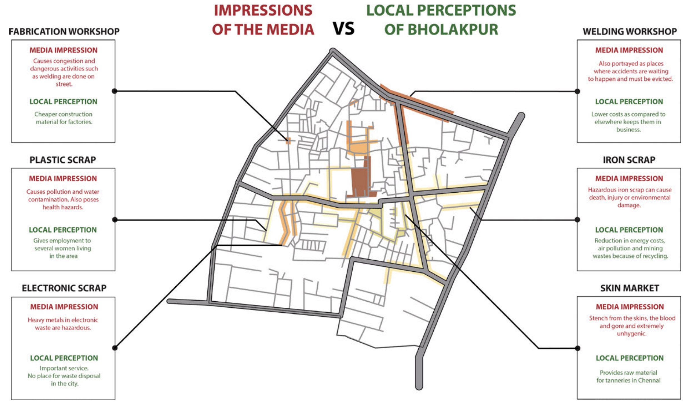

Mapping for social awareness
Facilitated by the cheek-by-jowl proximity of labour and business, slums are economic powerhouses where no task is too small. Indeed, their attention to the smallest of tasks, that most affluent countries consider worthless, can build global industries. For example, the recycling of hair waste to a multi-million dollar wig and hair extension industry which employs a vast segment of entrepreneurial individuals and businesses from ragpickers to local waste collection depots to wig artisans [1]. Despite popular misconception, slums even house licensed businesses that maintain formal associations representing their interests with the authorities to ensure business continuity and prosperity [1].
However, addressing misconceptions and changing minds requires understanding the web of connected beliefs [2]. Some beliefs are created and reinforced by reportage that push a persistent viewpoint with little nuance or balance. Maps and cartographic narratives can reclaim popular mis-perceptions - often as part of a larger, concerted parry to political responses that answer only to the mainstream clarion call.
Counter cartographies from Hyderabad Urban Lab present perceptions of waste recycling from mainstream media and local perspectives [3]. Media impressions focus on the negative externalities of waste work while locals perceive them as unique business niches that generate economic value, a sense of pride and contribute to social good.
This map frames an argument using more than one narrative archetype [4] - a dovetail of “Defamiliarisation” and “Repetition” design patterns. The map de-familiarises the reader by clashing the media stereotype with the opposing local perspective and repeating the onslaught of juxtapositions for several areas. The repetitive de-familiarisation forces a deep acknowledgement in the reader - that their views are influenced by outsider rather than local perspectives.

The accompanying text recounts the use of participatory mapping to trace water pollution when the marginalised slum businesses were faced with the pressure of closure. Locals were motivated to contribute their intimate knowledge of place towards collection of water samples and mapping business locations. Together the data was able to show the poor correlation between the businesses threatened with closure and the source of water pollution.
We understand counter-cartography as a political practice of mapping back.
– This is not an atlas [3]
Counter cartographies and participatory mapping occupy an important intersection - of laypeople, especially the marginalised, creating maps and spatial data for social awareness and activism. To date, these pushes for data democracy and data-driven change have not received as much attention as they deserve in popular hype. Perhaps the tide will change once the world enters the third wave of open data [5]?
.. the genesis of a Third Wave of Open Data that can unlock these silos and unleash the public good potential of data for the digital era. The Third Wave takes a much more purpose-directed approach than prior waves; it seeks not simply to open data, but to do so in a way that focuses on impactful reuse, especially through inter-sectoral collaborations and partnerships.
– Open data policy lab [5]
References
Credits
- Post photo by OCG Saving The Ocean on Unsplash